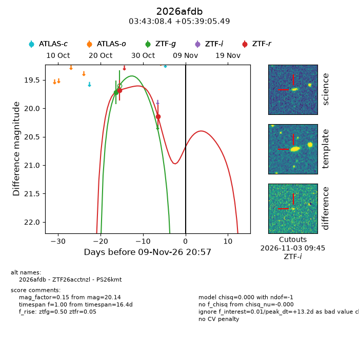
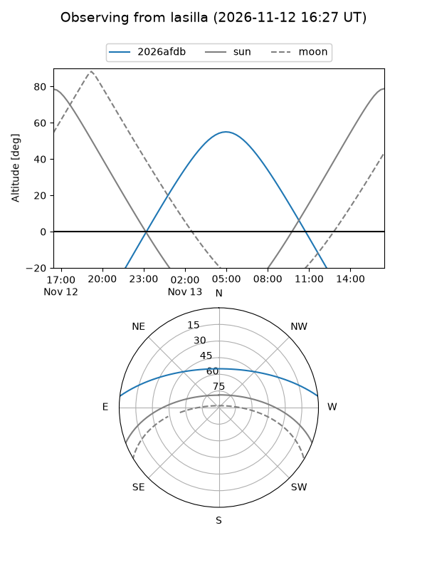
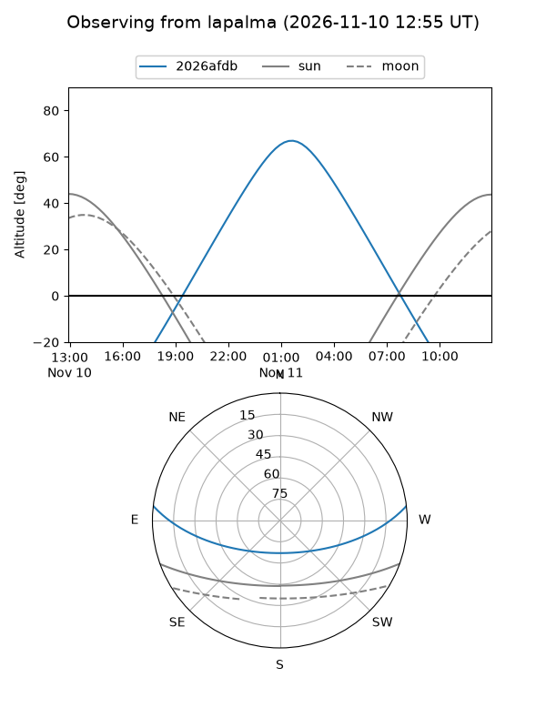
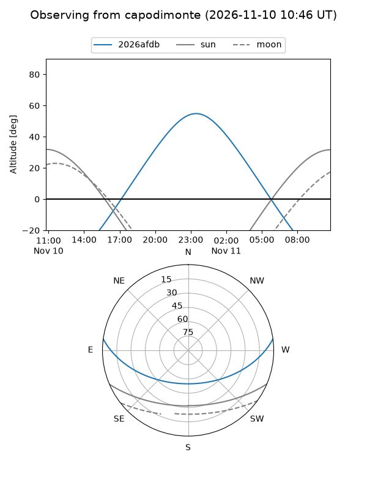
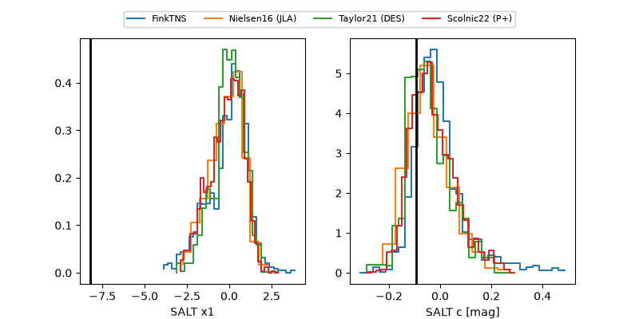

2026afdb
Target 2026afdb at 2026-11-09 20:59
Aliases and brokers:
FINK-ZTF: ztf.fink-portal.org/ZTF26acctnzl
Lasair-ZTF: lasair-ztf.lsst.ac.uk/objects/ZTF26acctnzl
ALeRCE-ZTF: alerce.online/object/ZTF26acctnzl
YSE-PZ: ziggy.ucolick.org/yse/transient_detail/2026afdb
TNS name: wis-tns.org/object/2026afdb
Direct TNS query: direct search
alt names
ZTF26acctnzl (ztf,fink_ztf)
2026afdb (tns,yse)
PS26kmt (panstarrs)
Coordinates:
equatorial (ra, dec) = 55.7852,+5.65153
equatorial (HMS+DMS) = 03:43:08.45,+05:39:05.49
galactic (l, b) = (181.1507,-37.12891)
Flags:
peak dt: +13.2
Photometry:
last ztfg=19.72, ztfr=20.14
1 ztfg, 2 ztfr detections
Lightcurve

Visibility



Additional plots
